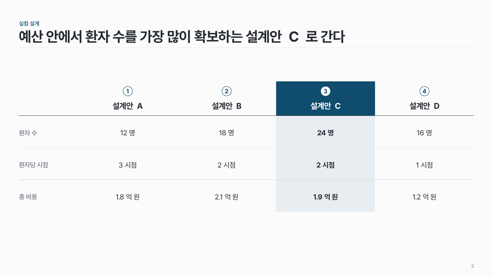
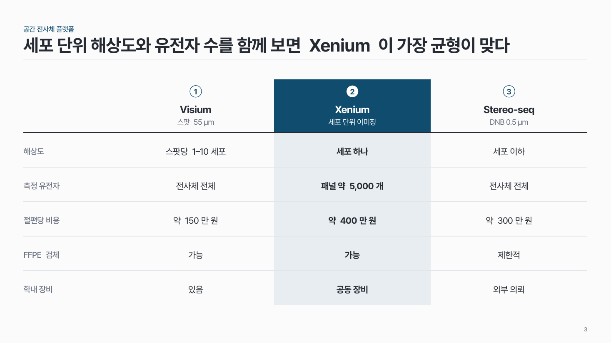

옵션 비교 comp-05
대안 3–4개를 같은 기준으로 견주고 추천 하나를 진하게. 기준은 맨 왼쪽 열에.

이 시안
옵션 3개 × 기준 4개 · 추천 열 강조 + 결론 줄
슬라이드 제목: 표본이 적고 공변량이 많은 이번 설계에는 DESeq2 가 맞다
언제 쓰나
분석 도구, 실험 설계안, 플랫폼처럼 대안 3–4개 가운데 하나를 고르는 근거를 보일 때요.
구성
- 맨 왼쪽 열에 기준 이름 (다른 열의 60% 폭).
- 옵션마다 같은 폭 열, 머리에 번호 + 이름 (+ 작게 설명).
- 칸에는 짧은 값.
- 추천 열 하나만 머리를 채우고 옅은 면을 깔아요.
지킬 것
- 옵션 3–4개, 기준 3–5개.
- 칸 글은 15자, 두 줄 이내.
- 기준 순서는 모든 옵션에 같게.
하지 말 것
- 모든 열에 색을 채우지 않아요.
- 칸마다 아이콘을 붙이지 않아요.
더 볼 게시물 Instagram @peedori_
시안 비교
같은 내용을 옵션만 바꿔 그렸어요. 그림을 누르면 크게 보여요.
A옵션 3개 × 기준 4개 · 추천 열 강조 + 결론 줄
슬라이드 제목: 표본이 적고 공변량이 많은 이번 설계에는 DESeq2 가 맞다

B옵션 4개 × 기준 3개
슬라이드 제목: 예산 안에서 환자 수를 가장 많이 확보하는 설계안 C 로 간다

C옵션 3개 + 부연 × 기준 5개
슬라이드 제목: 세포 단위 해상도와 유전자 수를 함께 보면 Xenium 이 가장 균형이 맞다